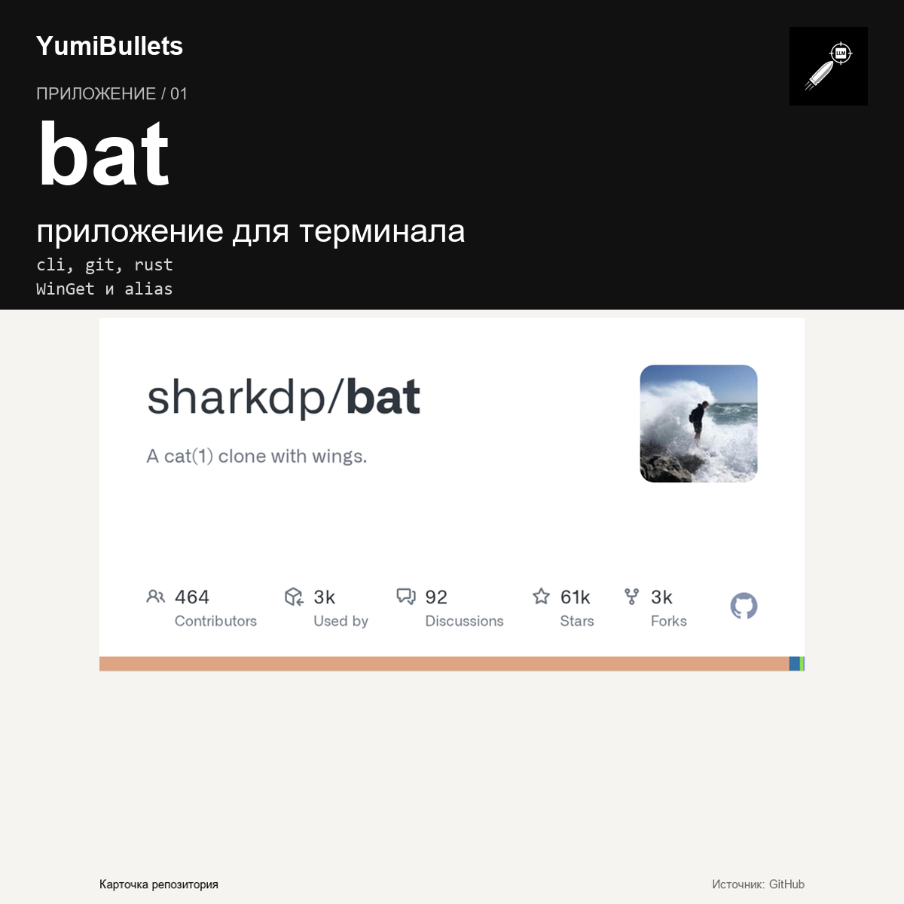

Читайте файлы с подсветкой: как заменить cat на bat
Вы открываете конфигурацию проекта и тоните в однообразных строках. Разберём, что сделать, чтобы вместо плоского cat в терминале появились удобная подсветка и не меняющий…

Вы открываете конфигурацию проекта и тоните в однообразных строках. Разберём, что сделать, чтобы вместо плоского cat в терминале появились удобная подсветка и не меняющий…